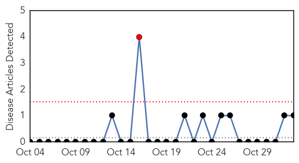
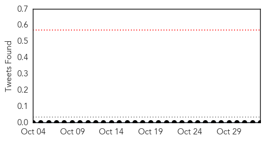
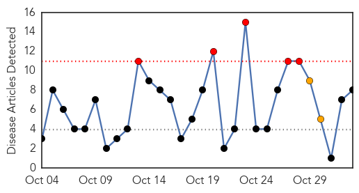
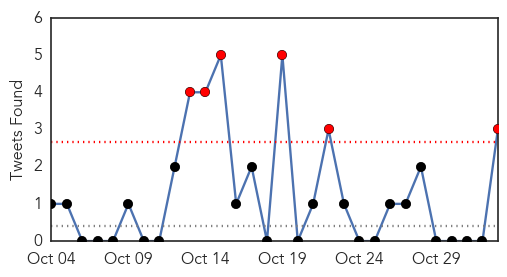
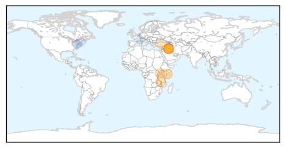
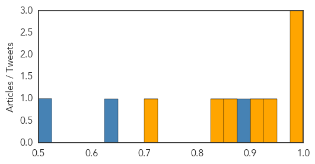

Yellow Fever
30-Day Web Trend
1 alerts, 0 warnings

30-Day Twitter Trend
0 alerts, 0 warnings

Article Locations

Article Confidences

Top Articles:
Top Tweets:
-
No tweets found for Nov 02, 2015
Cholera
30-Day Web Trend
5 alerts, 2 warnings

30-Day Twitter Trend
6 alerts, 0 warnings

Article Locations
Article Confidences
Top Articles:
- 0.993
- Cholera Is Coming
- 0.983
- WHO pre-positions emergency supplies in Somalia in preparation for El Niño
- 0.983
- Iraq combats cholera with massive vaccination campaign
- 0.949
- Leprosy resurfaces in Malawi
- 0.916
- Iraq Carries Out Vaccination Campaign To Combat Cholera
- 0.863
- OIC Summit Addresses Challenges of Women Investors
- 0.830
- WHO sends oral cholera vaccine to Iraq
- 0.706
- Cholera in Syria: Is Europe at risk?
Top Tweets:
- 0.895
- RT: In response to cholera outbreak Mozambique health official states improving sanitation will help prevent disease ht…
- 0.627
- WHO mobilized 510000 doses of oral cholera vaccine to help control the outbreak in Iraq https://t.co/iDaTJJcYwS
- 0.511
- : Where immunity "impacts individuals and communities there are huge issues of anomaly and hypocrisy" Haiti cholera